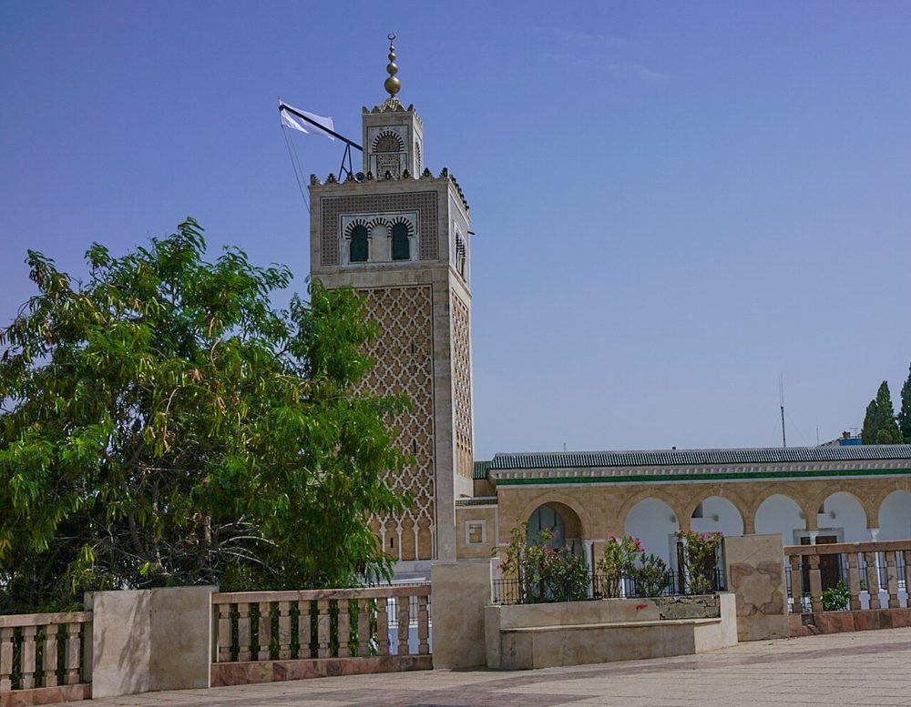

简介
由哈夫斯王朝的创建者建于卡斯巴广场，拥有突尼斯市最美的宣礼塔之一，采用马拉喀什和塞维利亚的穆瓦希德风格。
照片

历史
它于 1231 年至 1235 年奉哈夫斯王朝创建者艾布·扎卡里亚·叶海亚之命修建，他曾任塞维利亚总督。它起初是居住在卡斯巴的君主们的宫廷清真寺，后来成为城中的聚礼清真寺之一；这是继宰图纳之后在突尼斯市兴建的第一座清真寺。奥斯曼时期，这里按哈乃斐派的仪轨礼拜。
建筑
礼拜殿进深大于面宽，共 7 条纵廊、9 道横廊，立于带哈夫斯式柱头的大理石柱之上；米哈拉布上方是一座饰有雕花石膏钟乳饰的穹顶。方形宣礼塔早在 1233 年就已建成，表面布满赭石色石材的菱形网纹：它是宰图纳现存宣礼塔的蓝本。
重要年代
- 1231动工兴建（艾布·扎卡里亚·叶海亚）
- 1233宣礼塔竣工
- 1235清真寺工程结束
- 1979突尼斯老城被列入联合国教科文组织世界遗产名录
参观
这里首先是礼拜的场所：请穿着得体，进入礼拜殿前请脱鞋，并避开礼拜时间。在一些大清真寺，非穆斯林访客可以进入庭院，但不能进入礼拜殿。开放时间会有变动：请在当地询问。
在地图上
资料与链接
资料来源
- 文字由 Mosquées en Tunisie 根据上述资料（维基百科、Qantara、Discover Islamic Art、联合国教科文组织）撰写，核对于 2026 年 10 月 9 日。
- Wikidata : Q3324927 (CC0)
- 照片：维基共享资源，每张照片下方注明作者和许可协议。
- 位置：OpenStreetMap（ODbL）和 Wikidata。